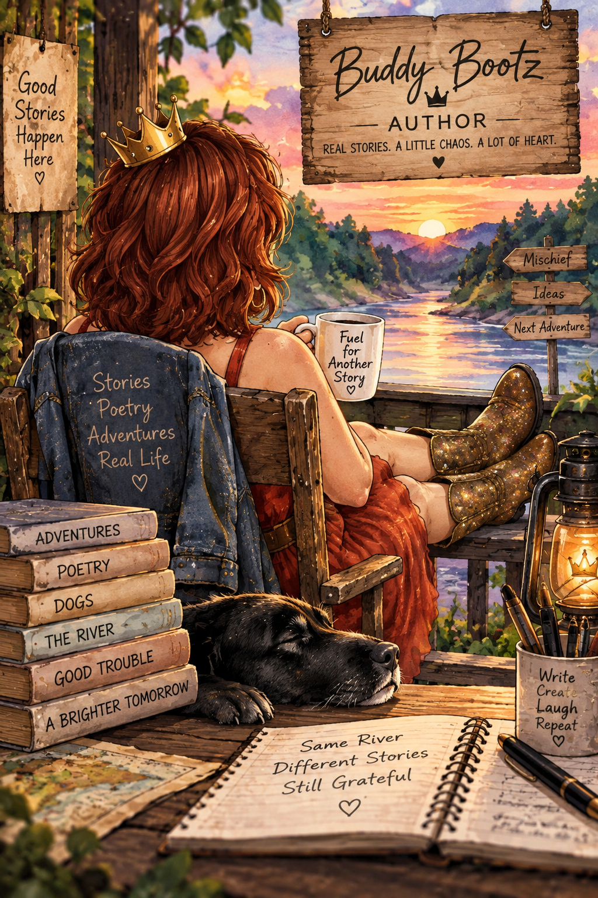

Hi, I'm Buddy Bootz.
Buddy Bootz is the name I write under, but behind the name is simply me, writing about the things that matter to me.
I've always believed the best writing doesn't try to impress people. It tries to tell the truth.
Sometimes that truth comes out as a poem. Sometimes it shows up wearing a crooked crown and wandering into trouble.
I write poetry because sometimes a feeling arrives before I have the words for it. Other times, a memory, a strange thought, a ridiculous moment, or something that makes me laugh refuses to leave me alone until I write it down.
Some poems come from difficult places. Others come from hope, humor, curiosity, or simply noticing something worth saying. I like having room for all of it.
I started The Adventures of Buddy Bootz & Sir Drinks-A-Lot because I wanted to make someone smile when life wasn't giving them many reasons to.
I was going through one of the hardest and loneliest periods of my life, and creating those stories gave me a way to bring a little laughter into a time that needed it.
What started as a way to make someone else smile became something that helped me, too. The stories gave me a place to imagine, create, laugh, and keep moving when I wasn't sure what tomorrow was supposed to look like.
Maybe that's the thread running through everything I write. Whether I'm writing a poem or sending Buddy and Sir into another questionable adventure, I'm looking for something real. Something that makes a reader feel something, think about something, or maybe just smile for a minute.
I never quite know where an idea is going when I start writing it.
That's usually when things get interesting.
Thanks for reading.
It means more than you know.
A Dedication to Richie
One of the hardest and loneliest periods of my life was a time when I was isolated, lost in my own thoughts, and writing more than ever. It was during that time that Richie showed up.
Throughout that year, he gave me moments of laughter, conversation, and reasons to keep moving forward. Somehow, he made the world feel a little less heavy and made it feel like I wasn't alone.
There were moments when the worries slipped away quietly, and for a little while, I wasn't just surviving.
I was there.
Present.
Part of my own life again.
I wanted to give him something back.
So I gave him Sir, a place in Buddy Bootz's world where he could be part of the adventures and the world I had created.
And now, wherever the adventures go, a little piece of Richie goes with them.
Thank you Richie for carrying joy through the wreckage.